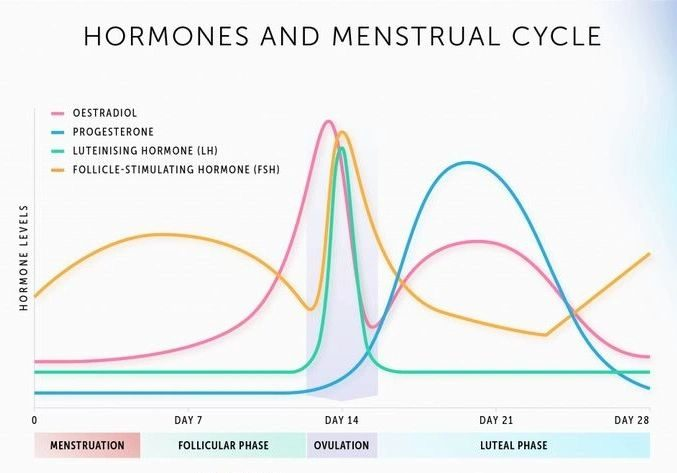

Fasting has become a buzzword in the wellness world — from intermittent fasting to multi-day fasts. But for women over 30, fasting isn’t just about weight loss; it’s a tool to support blood sugar balance, hormone regulation, and long-term health. However, fasting for women requires a thoughtful, mindful approach. Unlike men, women’s hormones are sensitive to energy restriction, stress, and nutrient timing. Done correctly, fasting can be empowering and health-transformative. Done incorrectly, it can backfire.
This guide will break down how fasting affects your blood sugar and hormones, safe practices for women, the best ways to break a fast, and tips to integrate fasting into a holistic lifestyle.
How Fasting Affects Blood Sugar
Fasting directly impacts blood sugar levels and insulin sensitivity. When you fast, your body shifts from using glucose for energy to burning stored fat, lowering insulin levels in the process.
Key benefits for women over 30:
- Improved insulin sensitivity: Studies show that intermittent fasting enhances the body’s response to insulin, which is crucial for preventing type 2 diabetes and metabolic syndrome (1).
- Stabilized blood sugar swings: Fasting can reduce post-meal spikes, promoting steady energy throughout the day (2).
- Weight management: Lower insulin levels support fat metabolism, especially around the abdomen, a common area of weight gain in midlife.
Caution: Women with reactive hypoglycemia or on blood sugar-lowering medications should consult a healthcare professional before fasting.
Fasting and Female Hormones
Hormones are highly responsive to energy intake, sleep, stress, and nutrient availability. For women over 30, fasting affects:
Cortisol (Stress Hormone)
Fasting can raise cortisol, particularly if fasting is too long or stressful. Chronically elevated cortisol can disrupt thyroid and reproductive hormones, impair sleep, and increase belly fat.
Insulin
Fasting lowers insulin, supporting better glucose control. Lower insulin levels also reduce inflammation and improve metabolic flexibility.
Thyroid Hormones
Extended fasting may reduce T3 (the active form of thyroid hormone) in sensitive women. Short, intermittent fasting is generally safe for thyroid health.
Reproductive Hormones (Estrogen & Progesterone)
Aggressive fasting or low-calorie intake can disrupt menstrual cycles, fertility, and progesterone balance. Women over 30 need to approach fasting gently, especially if trying to conceive or already perimenopausal.

Safe Fasting Types for Women Over 30
Intermittent Fasting (12:12, 14:10, 16:8)
- 12:12: Fast 12 hours overnight (e.g., 7 PM – 7 AM). Easiest and safest for most women.
- 14:10: Fast 14 hours overnight, eat during a 10-hour window. Supports blood sugar and mild fat loss.
- 16:8: Fast 16 hours with an 8-hour eating window. Best for women who tolerate fasting well and have stable hormones.
Extended Fasting (24+ hours)
- It can support autophagy (cellular repair) and longevity, but should be done sparingly and ideally under guidance.
- Best done during low-stress periods, on non-consecutive days.
Tip: Align fasting windows with your menstrual or life stage — e.g., avoid long fasts during the luteal phase when progesterone is high.
Holistic Lifestyle Connection
Fasting isn’t just about skipping meals; it’s an opportunity for mindful, holistic living:
- Body Awareness: Tune into hunger cues, energy levels, and stress response.
- Rest and Sleep: Ensure adequate rest, as sleep deprivation amplifies fasting stress.
- Mindful Practices: Journaling, meditation, or gentle movement can enhance fasting benefits.
- Gratitude & Intuition: Use fasting as a reset, not punishment, promoting a positive relationship with food.
Best Practices to Break a Fast
How you break a fast is just as important as the fast itself. Gentle foods prevent blood sugar spikes, digestive stress, and hormone disruption.
Recommended options:
- Bone broth – Easy on digestion, mineral-rich
- Avocado – Healthy fats to stabilize blood sugar
- Olive oil or MCT oil – Supports satiety
- Light proteins – Eggs, fish, or small servings of poultry
- Fermented foods – Yogurt (if tolerated), sauerkraut, or kimchi for gut support
Tips:
- Break fast slowly, start with a small portion.
- Avoid refined sugar or heavy carbs immediately.
- Rehydrate with water or herbal tea first.
Who Should Avoid or Modify Fasting
Fasting isn’t suitable for everyone. Women should modify or avoid fasting if they:
- Are you pregnant or breastfeeding
- Have adrenal fatigue or high chronic stress
- Have thyroid imbalances (especially low T3)
- Struggle with disordered eating or a history of restrictive dieting
- Experience severe hypoglycemia
Alternative: Gentle fasting windows (12:12) or focusing on balanced meals, nutrient-dense snacks, and mindful eating can provide benefits without risk.
Science-Backed Benefits of Fasting for Longevity
Research continues to uncover fasting’s benefits beyond blood sugar and hormones:
- Autophagy: Cellular repair that removes damaged cells (3)
- Reduced inflammation: Fasting lowers inflammatory markers like CRP (4)
- Improved metabolic flexibility: Enhanced ability to burn fat for energy
- Potential longevity benefits: Caloric restriction and intermittent fasting have been linked to lifespan extension in multiple studies (5)
Common Mistakes to Avoid
- Over-fasting: Long fasts every day can disrupt hormones.
- Skipping hydration: Water, herbal tea, and electrolytes are essential.
- Ignoring hunger cues: Mindless restriction can increase stress hormones.
- Neglecting sleep: Sleep deprivation amplifies cortisol and impairs fasting benefits.
- One-size-fits-all approach: Tailor fasting to your cycle, lifestyle, and energy levels.
Key Takeaways
- Fasting can improve blood sugar, insulin sensitivity, and metabolic health for women over 30.
- Hormonal balance is delicate — short intermittent fasts are safest for most women.
- Mindfulness, rest, and listening to your body enhance fasting benefits.
- Break fasts gently with healthy fats, proteins, and gut-supportive foods.
- Avoid fasting if pregnant, breastfeeding, or experiencing high stress or thyroid issues.
Conclusion
Fasting is a powerful tool for women over 30 when approached holistically. By balancing blood sugar, supporting hormones, and incorporating mindful practices, fasting can enhance energy, longevity, and overall well-being. Listen to your body, start slow, and remember that fasting is a tool — not a punishment.
Subscribe for more hormone-friendly tips and discover ways to nurture your body, balance your hormones, and live a vibrant, empowered life.
Author Bio
Written by Theresa Tam Sing, Integrative Health Practitioner specializing in gut health, hormones, and holistic wellness. Theresa helps women over 30 glow from within, balance their hormones, manage menopause symptoms, and feel confident in their bodies through functional lab testing, mindful nutrition, and lifestyle practices.
References (linked studies)
- Longo VD, Panda S. Fasting, Circadian Rhythms, and Time-Restricted Feeding in Healthy Lifespan. Cell Metab. 2016;23(6):1048–1059.
- Trepanowski JF, Bloomer RJ. The impact of religious fasting on human health. Nutr J. 2010;9:57.
- Mizushima N. Autophagy: Process and Function. Genes Dev. 2007;21(22):2861–2873.
- Johnson JB, et al. Alternate day calorie restriction improves clinical findings and reduces markers of oxidative stress in overweight adults with moderate asthma. Free Radic Biol Med. 2007;42(5):665–674.
- Fontana L, Partridge L. Promoting health and longevity through diet: from model organisms to humans. Cell. 2015;161(1):106–118.